骨盤の歪みから起こる不調で
こんなお悩みはありませんか？


あなたの産後のお悩み
サプライズ整体院が解決します！
-
当院の技術は
女性自身に掲載されています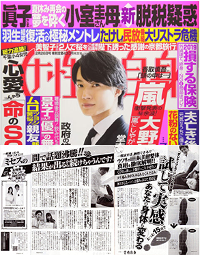 -
当院の技術は
NewsWeekに掲載されています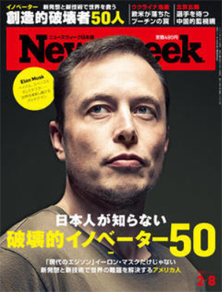 -
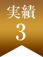
世界水準技術の
「国際国家資格」を持つ日本で
数少ない技術者です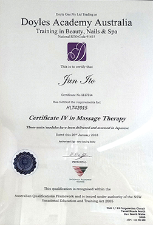
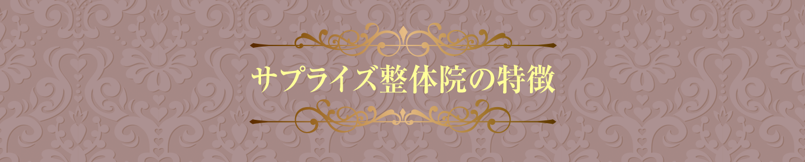 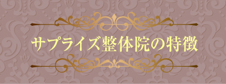
-
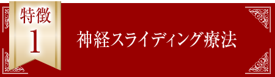
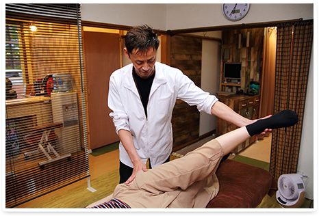神経スライディングとは、筋肉の奥にある神経をダイレクトにスライディングさせる方法です。
筋膜や筋肉が固くなる事で、「痛み」が出るのですが、その筋膜や筋肉を支配しているのが「神経」です。
神経の走行を滑らかにすることで、筋膜や筋肉を柔らかくし、痛みやしびれを解消できるのが「神経スライディング療法」になります。
なぜ産後の骨盤矯正に「神経」を動かすことが重要なのか？
妊娠中にリラキシンというホルモンが分泌して骨盤に付着しているじん帯が緩みます。骨盤はその影響で開いていきます。
出産後開いてゆがんでしまった骨盤が元に戻る事はほとんどありません。
その理由は運動不足などで現代人の女性は筋力が低下してしまっているせいなのです。開いたままの状態が続くと、重心のバランスがくずれてしまい、上半身を支える事がむずかしくなり腰痛、股関節痛、恥骨痛、膝痛、肩こり、頭痛などの症状が出てしまいます。
また、骨盤底筋と呼ばれる筋肉が弱くなり尿漏れが生じる場合もあります。
このような「痛み」は筋肉を支配している「神経」からアプローチすることで早期の段階で「痛み」から解放します。 -
 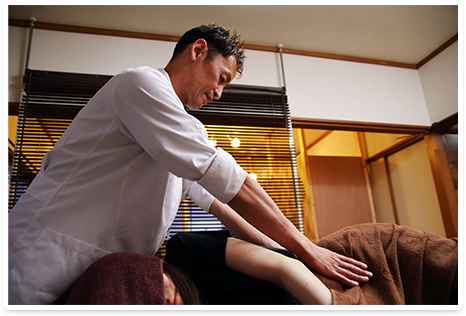
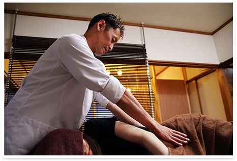太ももやお尻のでっぱり・肩こりや腰痛になると、一般的には、固まった筋肉を緩めたりストレッチをします。
しかし、根本的に改善する為には「固まっている筋肉だけを揉むのは間違いということを知ってましたか？
実は痛みの原因は『ほかに働いていない筋肉があるから』なんです。
「人間の体には、働きにくく、『サボりやすい』筋肉があります。
そこを、専門的な施術によってピンポイントで『働かせる』ことで、早ければコリや痛みは一週間で解消します。
また、産後は太ももやお尻が一回り大きくなります。
これは骨盤の開きとともに、筋肉のバランスが悪くなったり股関節がねじれたりすることで起こります。
妊娠でガニ股になったり産後赤ちゃんを抱っこしたりすることで、股関節に負担がかかってしまうのです。
このように産後に起こる症状も、しっかりと狙った筋肉をピンポイントに働かせれば、リンパを流したり、脂肪燃焼させることができ、痩身効果、産後太り効果にも期待できます。 -
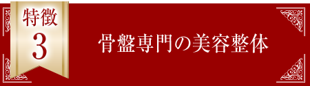
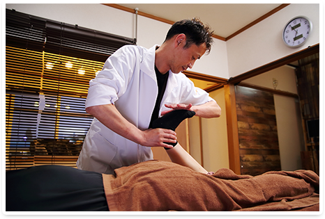産後の骨盤矯正専門に開発した、美容整体は、神経スライディング、サボり筋療法を組み合わせることで、「筋ポンプ作用」を施し、血流の入り口と出口の循環を改善させラダ全身の血行を良くします。
妊娠中や産後は運動不足で筋肉量が減るため、代謝が非常に悪くなります。
すると消費カロリーが減るため痩せにくくなり、血行不良になりがち。
さらに骨盤が歪むと血管が圧迫されるため、最初はお腹周りが、徐々に全身が冷え、水分が排出されにくくなるためです。
このような産後あるあるの症状も、「神経」→「筋肉」→「関節」の正しい順番で施術することで、血液循環が改善し、「骨盤のたわみ」が整えられ、内臓が正しい位置に戻り、「ヤセる」為に必要な基礎体温と基礎代謝が改善され、自分史上、最高のボディラインを創られていきます。
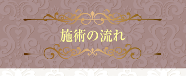
-
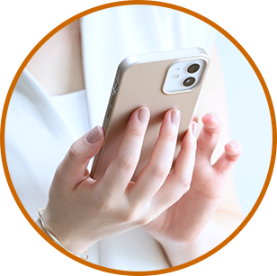
予約
お電話かまたはライン予約にて予約できます。
ライン予約に関しましては、24時間受付対応しておりますのでいつでもご連絡下さい。 -
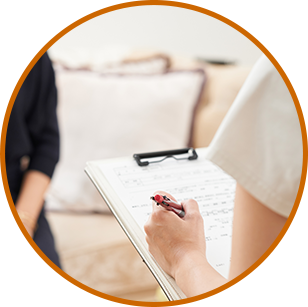
問診票記入
今の身体の状態に関して問診票を記入していただきます。
-
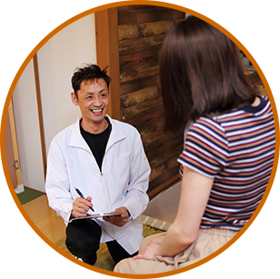
カウンセリング
まずは、あなたの痛みの状態を把握するために問診していきます。
「いつ・どこが・どのように」といった点を詳しくお聞きしていきます。 -
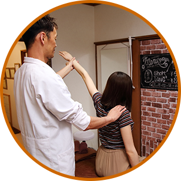
体の可動域検査
問診でお聞きしたことをもとに、痛みの原因を評価していきます。
ここではあなたの痛みがどこが原因で起こっているのかを調べていきます。 -
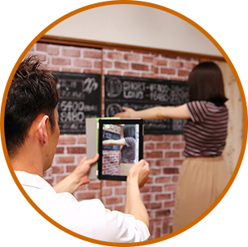ビフォーアフターの
撮影(希望の方のみ)施術前と施術後でどこがどう変わったか？を客観的に視覚的にわかります。また、画像はラインにて送信します。
-
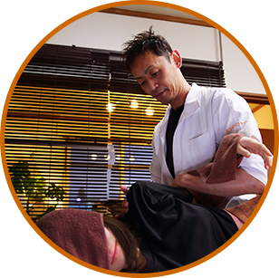
施術
患者さまが気になっているお悩みや求めている事を解決できるように施術を行います。 最大限に効果が実感できるようにしております。
-

今後の施術方針
改善するための治療期間や通う頻度などをお伝えします。 日常生活での姿勢や過ごし方などをアドバイス致します。
-

会計
料金をお支払いいただきます。 カードOKです。当院は明朗会計ですので知らない間に追加料金が発生したりすることは一切ありません。 ご安心ください。
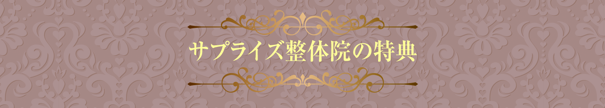 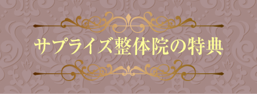
-
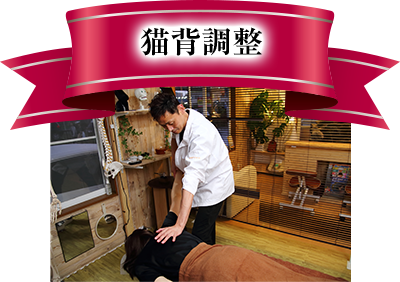 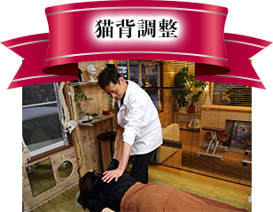
肩こりや首コリの原因は猫背にもあります。
カラダの土台である骨盤矯正後、
キレイな姿勢をつくる猫背も矯正も致します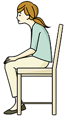 -
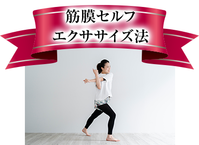 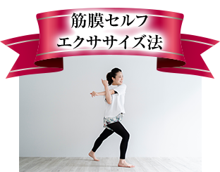
2回目以降になりますが、私の整体院で効果実証済みの素人でも簡単にできるセルフエクササイズ法を無料でプレゼントさせていただきます。
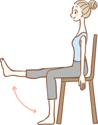 -
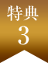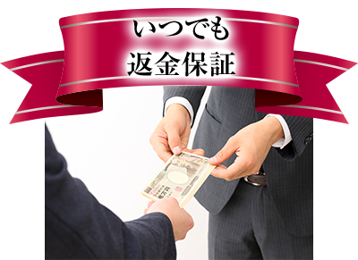 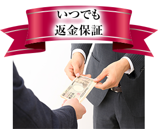
初回の施術で効果を実感できなければ、あなたの大切なお時間を割いて頂いたということで、当院までかかった往復の交通費を２倍返金いたします。
その中で培った施術技術でどうしても「効果があまり感じられない・・・」と思った場合は、初回の施術が終わった時点でお伝えください。
1mmも改善しなければ、その場で返金させていただきます！。
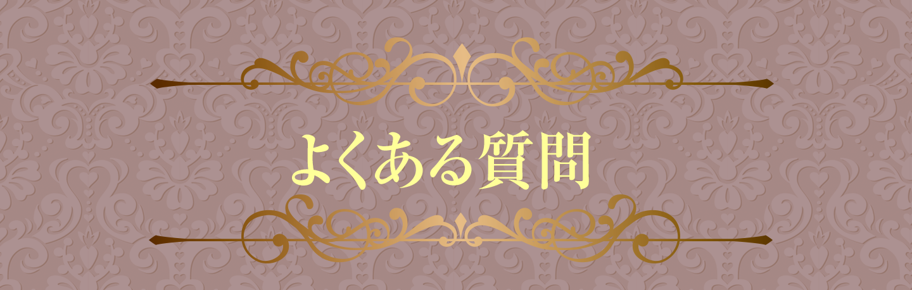 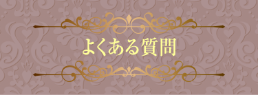
産後の骨盤矯正は
いつから可能ですか?
産後2ヶ月過ぎからを目安としており、
半年以内がベストです。
1年以上経つと改善に時間がかかりますが、当院では産後10年という方の骨盤を引き締めた実績もございます。
諦めずにご来院ください。
週に何回くらい
通わなければなりませんか？
基本は週1回ですが、症状によってはもう少し多めに通院していただく可能性もございます。
また、産後時間が経っている場合も、回数や期間が長めになるでしょう。
着替えを持参する
必要がありますか？
特にひつようありません。履き心地のよい、「ヨガ系のスゥエットパンツ」のお着替えも無料でご用意しておりますのでご安心下さい。
また、お着替えを持ってきていただくことも可能です。
駐車場はありますか？
はい。ございます。 無料の駐車1台のスペースをご用意しております。
駐車場が店頭より離れておりますので、
ホームページにてご確認ください。
赤ちゃん・子供と一緒に行っても
大丈夫ですか？
施術中はどうしても手が離せない状態が続きますので、ハイハイする赤ちゃん～小学生4年生以下のお子様の同伴は、ご遠慮ください。
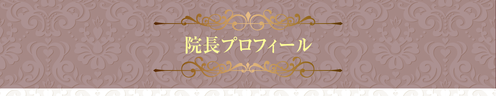 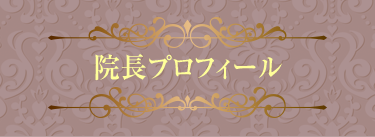
-プロフィール-
| 出身地： | 宮城県牡鹿郡女川町 |
| 保有資格： | オーストラリア認定国際国家資格 クラウドタイ古式マッサージ IHTAトータルボディセラピスト |
| 生年月日： | 1971.03.14 |
| 趣味・特技: | 医療解剖学 開脚ストレッチ ストリート治療 世界の香水コレクション 投資 韓国ドラマ 英語 マジック 沖縄旅行 お祭り巡り |
施術理念
-楽しく生きるための当たり前の
健康を-
初めまして。
サプライズ整体院-院長の伊藤 順と申します。
宮城水産高校を卒業後、サラリーマン、飲食店、マジシャンの仕事を経て、この業界に入りました。きっかけは2011年の東日本大震災です。
震災のツラさを少しでも紛らしたいと思い、マジシャン仲間と慰問目的で被災地へボランティアで慰問し、疲れ切った被災者の皆様にマジックを通して元気になって欲しという気持ちでマジックの演技をさせて頂きました。
そんな時,避難先で「ありがとう！ありがとう！」という声が聞こえ、その声のもとに行ってみると、疲れ切った被災者の方々を次々と短時間で数十人のカラダの不調を治している方々を見かけました。
腰が痛い、肩が痛い、膝が痛いと、カラダのあちこちを痛がっていた被災者の方々がたったの数分でどんどん痛みが消えたのでしょう。
キラキラした笑顔でその場を去っていくのです。
その方々のやっている不思議なことに興味をもち、その方々達が何をやっていたことを初めて知り、マジックで疲れ切っている皆様に喜んでもらうのも幸せだけど、心から喜んでもらえる仕事はこれだ！と直感的に思い、整体師との道を歩き始めました。
歩き始めたのはいいものの、その多くの患者様に対し、なかなか痛みを取り切ることができず、そんな自分に不甲斐なさを感じ、悔しい日々を過ごしていました。
そんな悔しい思いがフツフツと煮えたぎり、
このままでは誰も助けられない！
人生かけてやってみようと一念発起し、
◆3年予約が取れない有名な全国のゴッドハンド。
◆力士はじめ、一流アスリート治療専門のゴッドハンド。
さらに
◆美容に特化した芸能人ご用達の美容専門ゴッドハンド。
この10年で各分野で「神の手」といわれる師匠達にみっちりとその技術を教えて頂きました。（総額800万以上（汗））
そして、整体師の道を歩んでから今日まで10年。学んだ知識と技術から、サプライズ整体院オリジナルの「筋神経スライディング療法」が完成。
「痛い！」から「あれ？痛くない！」
数分で痛みを改善する療法にて、何十年も続く、「慢性的な肩こり」「、慢性的な腰痛」、「足のしびれや手のしびれ」なども、数分の治療で「あれ？」というぐらい改善できるようになりました。
なかなか痛みが改善せず、マッサージや電気治療などの『その場しのぎ』の施術を続けておられる方や、「どこに行っても改善しない」「○○治療専門店に「いっても改善しない」と悩んでおられる方のお力になりたいと思っています。
「この痛みと一生付き合っていかなければならない」と諦めておられる方は、一度当院へご相談ください。
私があなたの痛みと向き合います！